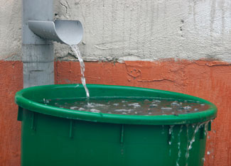

A Better Way To Harvest Rainwater
Capturing free rain from the sky is a simple and beautiful idea, but many rain barrel users aren’t making the most of this great resource. Learn how to create an inexpensive and more effective rainwater catchment setup.
By Cheryl Long
May 20, 2008
Water shortages are cropping up everywhere these days - sometimes due to drought, and sometimes just because we draw too heavily on the water resources in many areas, especially with increased development and population growth. As a result, there’s lots of talk about putting rain barrels under downspouts to capture rainwater for watering lawns and gardens. But the truth is that a couple of 50-gallon barrels don’t hold much water. Think about how long it can take to irrigate your garden, compared to the few minutes it would take to use your hose to fill one or two 50-gallon barrels. During an inch of rainfall, more than 900 gallons flows off of a house with a 30-by-50 foot roof. Why not make use of all 900 gallons?
Here’s a low-cost way to move the rain from your roof to where it will do some good, instead of letting most of it overflow and “escape” as soon as the barrel fills up.
- First, add an extension to a downspout from your house or garage to direct the runoff into a barrel or stock tank. Or cut off a downspout so that you can fit a barrel under it.
- Now it’s time to make fast-flowing soaker hoses. Drill holes in some old garden hoses and use screw-on caps to plug the ends of the hoses that will not be connected to the barrel. (Note: This setup may not have enough water pressure to work with the kind of porous soaker hoses often sold in garden stores.)
- Next, head to your local hardware store. Take a sketch to show them what you want to do (see our illustration in the Image Gallery), and have them help you find everything you need: a bulkhead fitting (about 3 inches in diameter) to let water flow out of a hole you’ll drill into your barrel or tank, plus fittings and a manifold with multiple outlets for attaching hoses to the bulkhead.
- Now cut a hole the size of the bulkhead fitting into the side of your barrel. (If you have a commercially made rain barrel, it may already have a small hole drilled in it with a spigot. Just carve your new hole beside that.) Placing the hole near the bottom of the barrel will work best, so that as the barrel fills with water, the pressure will push the water out through the soaker hoses.
- Once your hole is carved, install the bulkhead fitting. Then connect it to the manifold. Finally, screw the open ends of your hoses onto the manifold.
- Place the hoses on whatever area of your garden or lawn you want to water next time it rains. If possible, rake a shallow depression into the surface of your garden rows or beds to help hold the rainwater from the hoses, as it’s flowing into your plants’ root zones.
- Wait for rain!
NOTES
- If you garden where too much rain is sometimes a problem, include shut-off valves on the hose outlets and a diverter on the downspout, so you can direct water from the downspout out into your yard when the garden would be harmed by excess water.
- Keep an eye on the barrel and hoses during the first few downpours. If you need the water to flow faster, drill more holes in the hoses. If the water is coming out too fast and causing erosion, tape some holes closed with duct tape.
- If you try this approach, please write to us at letters@MotherEarthNews.com and let us know how it works out for you.
- Learn more about rainwater harvesting in Harvest the Rain.
RAINWATER HARVESTING BOOKS
Water Storage by Art Ludwig
Focuses on the design of tanks for storing water, although one chapter concentrates on ponds. Includes detailed instructions for building a tank.
Create an Oasis with Greywater by Art Ludwig
Covers options for using recycled greywater (water that drains from washing machines, showers, bathtubs and sinks). Plumbing, regulations and common errors are explained.
Rainwater Harvesting for Drylands (Volumes 1, 2 and 3) by Brad Lancaster
Volume 1 is an overview covering the basics of rainwater harvesting. Volume 2 covers the collection and storage of water in earthworks (swales, ponds and terraces), the use of mulch and greywater systems. Volume 3 (not yet published) will explore roof catchment and cistern systems in further detail.
Rainwater Catchment Systems for Domestic Supply by John Gould and Erik Nissen-Petersen
A thorough book covering both roof and ground catchment systems. All aspects of collecting and storing rainwater (in a variety of environments) are covered with illustrations, diagrams, photos and case studies. In addition to technical information, the book discusses social and economic aspects surrounding water.
|
 ISTOCKPHOTO.COM Some rain barrel users aren’t making the most of their free rainwater resources. Try our rain barrel setup to make use of the water that would otherwise overflow in a heavy downpour. |
 MATTHEW T. STALLBAUMER Take this simple sketch with you to the hardware store to help the clerk understand what you need to create a better rain barrel setup. |
|